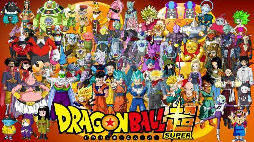
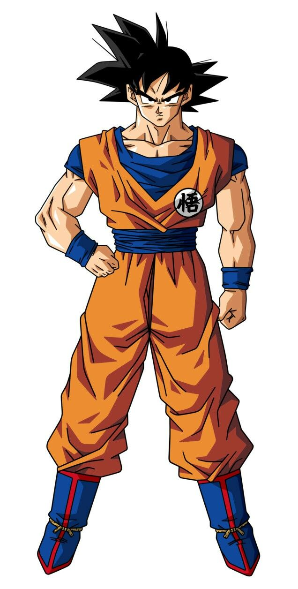
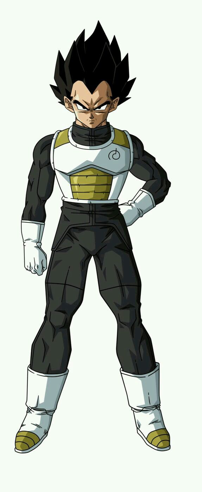

Dragon Ball Z es conocido por su elenco icónico de personajes que han dejado una huella imborrable en la cultura popular.
La serie cuenta con una amplia gama de personajes, cada uno con habilidades y personalidades únicas.
En esta sección, te presentamos a algunos de los personajes principales de Dragon Ball Z:
-  Principales personajes de Dragon Ball Z
-  Goku: El protagonista principal, un guerrero Saiyan con un corazón puro.
-  Vegeta: El príncipe de los Saiyans, rival y aliado de Goku.
-
 Gohan: El hijo de Goku, un guerrero talentoso.
Gohan: El hijo de Goku, un guerrero talentoso.